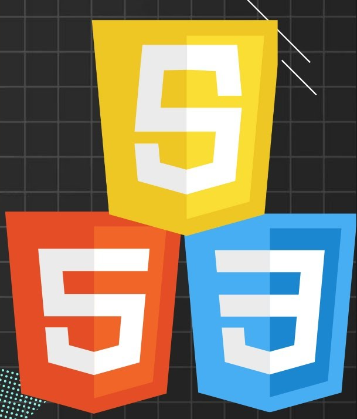

Temas Selectos de Sistemas Computacionales

Práctica 1 | Estructura y manejo del lenguaje HTML versión 4
Objetivo:
El alumno elaborará una página web sencilla utilizando las etiquetas de html versión 4, para
presentar estructurar la información en el internet con actitud analítica, de manera creativa.
Vista previa de la práctica
Práctica 2 | Herramientas para el diseño de páginas web
Objetivo:
Constuir una pagina web aplicando las etiquetas del lenguaje, para comprender la sintaxis del
lenguaje HTML.
Vista previa de la práctica
Práctica 3 | Introducción a los CSS
Objetivo:
Conocer el lenguaje CSS utilizando las reglas de estilo en un nuevo documento, para controlar
el aspecto de sus páginas HTML5 y separar la apariencia del contenido, con actitud analítica y
perseverancia.
Vista previa de la práctica
Práctica 4 | Class, id, span y divs
Objetivo:
Utilizar clases e identificadores, distinguiendo cuando utilizar cada uno de estos elementos para
separar la apariencia del sitio web y aplicar reglas de estilo css, con perseverancia y paciencia.
Vista previa de la práctica
Práctica 5 | Nuevas etiquetas de HTML5
Objetivo:
El alumno incorporará las nuevas especificaciones de HTML5, utilizando las nuevas etiquetas del lenguaje para
construir una página web completamente en HTML5 de manera creatividad y ordenada.
Vista previa de la práctica
Práctica 6 | Posicionamientos Absolute, Relative, Fixed y Static
Objetivo:
Implementación de los posicionamientos Absolute, Relative, Fixed y Static en CSS para la comprensión
del funcionamiento de las mismas.
Vista previa de la práctica
Práctica 7 | Index del perfil de clase
Objetivo:
Con la realización de esta práctica se pretende realizar una página personal que muestre mi información
académica y prácticas realizadas en la materia de Temas Selectos de Sistemas Computacionales.
Vista previa de la práctica